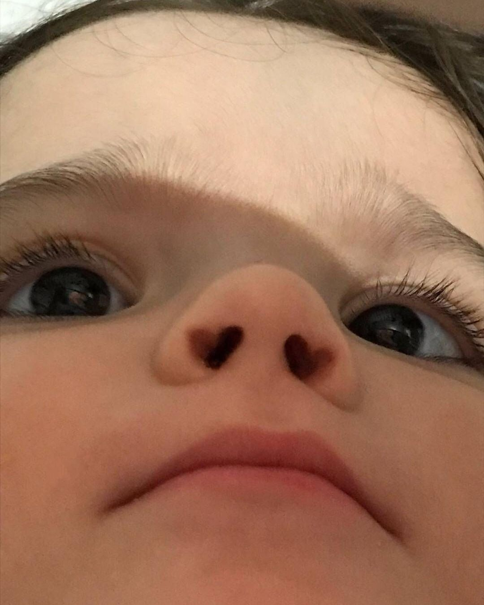

Buda bura qədər imiş hər şeyin bir sonu olurrr👋🔚
:Başına çox pis və ya çox yaxşı bir hadisə gələndə bunu aç!!!
:Ümidsiz hiss edəndə bunu aç!!!
:Çirkin hiss edəndə bunu aç!!!
:Biraz gülmək istəsən bunu aç!!!
Çinli Bir Çiftçinin Hikayesi:
Köyün birinde yaşlı bir adam yaşarmış. Çok fakirmiş, fakat öyle dillere destan bir beyaz atı🦄 varmış ki bu adamın, kral🤴🏻 bile onu kıskanırmış. Birçok defa kral bu at için ihtiyara nerdeyse hazinesinin tamamını teklif💰 etmiş ama adam satmaya yanaşmamış.
“Bu at, bir at değil benim için. Bir dost. İnsan dostunu satar mı?🫂” dermiş hep.
Bir sabah at ortadan kaybolur😶🌫️. Köylüler, ihtiyarın başına toplanmış.
“Seni ihtiyar bunak. Bu atı sana bırakmayacakları, çalacakları belliydi. Bu fakirlikte böyle değerli bir şeyi nasıl koruyabilirsin? Krala satsaydın, istediğin kadar paran olurdu ve ömrünün sonuna kadar beyler gibi yaşardın. Şimdi ne paran var, ne de atın” demişler.
İhtiyar “Bir karara varmak için acele etmeyin” demiş. Sadece ‘At kayıp’ deyin. Çünkü gerçek bu. Ondan ötesi sizin yargınız ve sizin yorumunuz. Atımın kaybolması, bir talihsizlik mi, yoksa bir şans mı, bunu henüz bilmiyoruz. Çünkü bu olay henüz bir başlangıç. Arkasının nasıl geleceğini kimse bilemez.”
Köylüler ihtiyar bunağa kahkahalarla gülmüşler.😂
At bir gece ansızın döner🍖🥛(dönər ayran nə gedərrr)
Meğer çalınmamış, kendi başına dağlara gitmiş. Dönerken de, vadideki bir düzine yabani atı peşine takıp getirmiş.
Köylüler, ihtiyar adamın etrafına toplanıp özür dilemişler.
“Babalık” demişler, “Sen haklı çıktın. Atının kaybolması bir talihsizlik değilmiş, şimdi bir sürü atın oldu; adeta başına devlet kuşu kondu.”
“Karar vermek için gene acele ediyorsunuz” demiş ihtiyar. “Sadece atın geri döndüğünü söyleyin ama yargılamayın! Bilinen gerçek sadece bu. Ondan ötesinin ne getireceğini henüz bilmiyoruz. Bu daha başlangıç, tüm bildiğimiz yaşamın yalnızca bir kesiti. Yaşam bir kitap gibidir. Bir kitabın ilk cümlesinin ilk kelimesini okur okumaz o kitabı nasıl anlayabilir, tamamı hakkında yargıya varıp fikir yürütebilirsiniz?”
Köylüler bu defa ihtiyarla açıktan dalga geçmemişler ama içlerinden “Bu herif sahiden gerzek(꩜ ᯅ ꩜)” diye geçirmişler.
Bir hafta geçmeden, vahşi atları terbiye etmeye çalışan ihtiyarın tek oğlu attan düşmüş ve ayağını kırmış👩🦽. Evin geçimini temin eden oğul şimdi uzun zaman yatağa hapsolmuş🚔.
Köylüler gene gelmişler ihtiyara.
“Bir kez daha haklı çıktık” demişler (puahh). “Bu atlar yüzünden tek oğlun bacağını uzun süre kullanamayacak. Oysa sana bakacak başkası da yok. Şimdi eskisinden daha fakir, daha zavallı olacaksın” demişler.
İhtiyar “Siz yargılama hastalığına tutulmuşsunuz, hep erken karar veriyorsunuz” diye cevap vermiş. “O kadar acele etmeyin. Oğlum bacağını kırdı. Gerçek bu. Ötesi sizin yargınız ve yorumunuz. Ama acaba ne kadar doğru! Hayat böyle küçük parçalar halinde gelir ve ondan sonra neler olacağı size asla bildirilmez. Fakat siz her şey yaşanmış gibi sonuç çıkarıyorsunuz!”
Derken birkaç hafta sonra, düşmanlar kat kat büyük bir ordu ile ülkeye saldırmış. Kral son bir ümitle eli silah tutan bütün gençleri askere çağırmış. Köye gelen görevliler, ihtiyarın kırık bacaklı (niqodnu) oğlu dışında bütün gençleri askere almışlar. Köyü matem sarmış😭. Çünkü savaşın kazanılmasına imkân yokmuş, giden gençlerin ya öleceğini ☠︎︎ ya esir düşüp köle 👳🏿♂️ diye satılacağını herkes biliyormuş.
Köylüler, gene ihtiyara gelmişler.“Gene haklı olduğun kanıtlandı” demişler. “Oğlunun bacağı kırık, ama hiç değilse yanında. Oysa bizimkiler belki asla köye dönemeyecekler. Oğlunun bacağının kırılması, talihsizlik değil, şansmış meğer.”
“Siz erken karar vermekten kurtulamıyorsunuz. Daima yargılıyor ve sonuç çıkarıyorsunuz” demiş, ihtiyar.
“Oysa ne olacağını kimse bilemez. Bilinen bir tek gerçek var. Benim oğlum yanımda, sizinkiler askerde. Ama bunların hangisinin talih, hangisinin şanssızlık olduğunu Tanrı bilir😇.”
Epeydir ne sen anlıyorsun gittiğin yeri, ne gittiğin yer anlıyor seni.
Ne sanıyordun, Dünya zaten hep böyle bir yerdi..
Bu video ve söz mənə biraz da olsa ümid verir. Bəlkə səndə də işə yaradı.
Birdənə də şit zarafat deyim bəsdi:
:Kəpənəklərin ən sevərək oxuduğu mahnı hansıdı?Kəpənək düz deyir gül , əylən bu həyatımızda həqiqətən diqqətli baxanda sadəcə bu günümüz var əlimizdə😔
Həyat bir gündü oda bu gündü ddndjdjsjjdjddsj